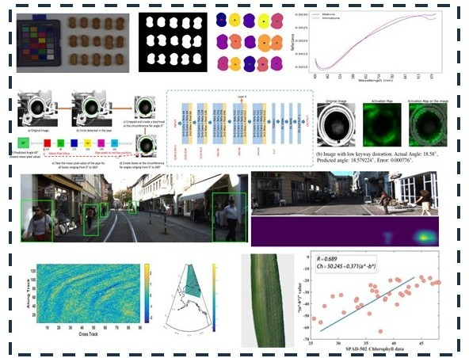
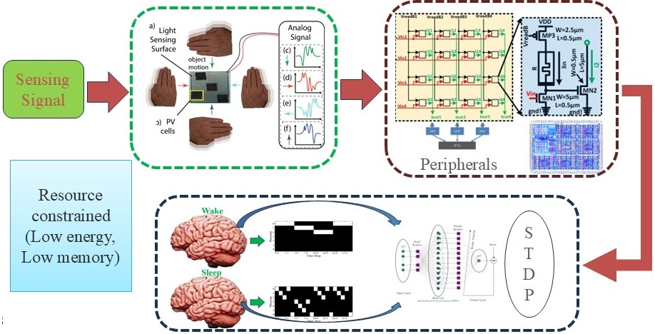
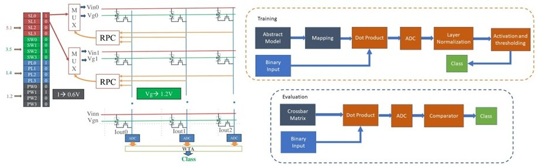

Research Projects

Resource-Constrained Computer Vision
Edge AI
Embedded Vision
Efficiency
[Add 2–4 lines describing the goal, methods, and impact. Example: lightweight models, compression, efficient feature extraction, and deployment constraints (latency/energy/memory).]
Figure file:
assets/project_rc_vision.jpg (optional)

In-Memory / In-Sensor Computer Vision
In-Sensor
In-Memory
Mixed-Signal
[Add 2–4 lines describing your in-sensor/in-memory pipeline: template matching, motion recognition, dot-product engines, WTA, ADC/DAC trade-offs, etc.]
Figure file:
assets/project_in_sensor.jpg (optional)

Hardware-Aware Learning / Neuromorphic Computing
SNNs
Neuromorphic
Co-Design
[Add 2–4 lines describing your work: refractory-period optimization, spike reduction, STDP, reservoir/sleep-inspired learning, device non-idealities, and energy-aware training/inference.]
Figure file:
assets/project_hw_aware_learning.jpg (optional)
Tip: Put your project images in
assets/ and use the same filenames shown above,
or edit the src="..." paths to match your files.